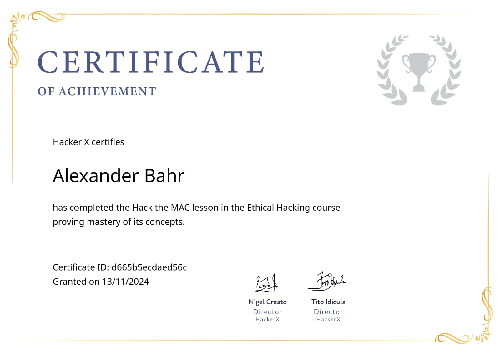
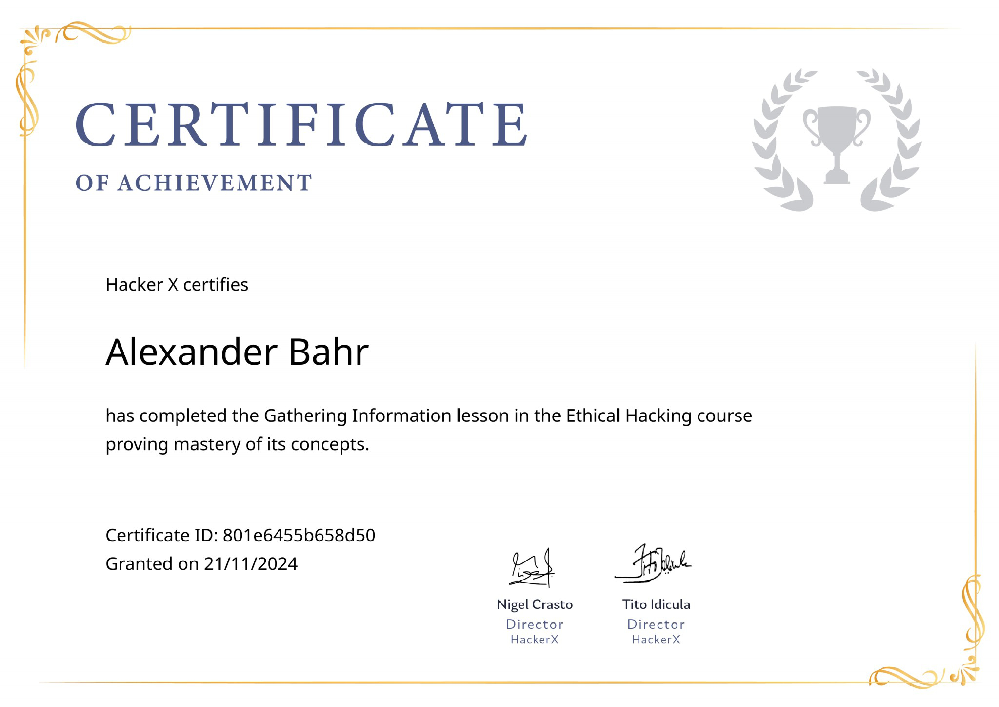

Front-End
- HTML5 – semantische und strukturierte Webseiten
- CSS3 – responsive Layouts und klare Oberflächen
- JavaScript – Interaktionen, DOM-Logik und Benutzerführung
Lexyfy
Portfolio · Anwendungsentwickler
Portfolio
Angehender Anwendungsentwickler mit Fokus auf strukturierte Webentwicklung, sichere Anwendungslogik und praxisnahe Softwareprojekte.
Über mich
Ich bin angehender Anwendungsentwickler und befinde mich derzeit in der Umschulung im Berufsförderwerk Berlin-Brandenburg.
Besonders interessieren mich strukturierte Webentwicklung, Datenbanken, Authentifizierungsprozesse und die saubere technische Umsetzung von Anwendungen.
Mein Anspruch ist es, Lösungen nicht nur funktional umzusetzen, sondern sie nachvollziehbar, wartbar und praxisnah zu entwickeln. Diese Portfolio-Seite gibt einen kompakten Überblick über meinen aktuellen Entwicklungsstand, meine Schwerpunkte und mein zentrales IHK-Projekt.
Fähigkeiten
Projekte
Mein zentrales Vorzeigeprojekt ist ein im Rahmen meiner IHK-Abschlussphase entwickeltes Benutzersystem mit Fokus auf Sicherheit, Struktur und praktischer Anwendbarkeit.
Der Schwerpunkt lag auf einer sicheren Authentifizierung mit Passwort-Hashing, Zwei-Faktor-Authentifizierung per E-Mail und App, JWT-basierten Sitzungen sowie einer klar modularen Backend-Struktur.
Ziel war es, nicht nur eine funktionierende Anmeldung zu entwickeln, sondern ein erweiterbares System, das technisch nachvollziehbar, sauber dokumentiert und praxisnah einsetzbar ist.
Dieses Projekt ist aktuell mein aussagekräftigstes Beispiel dafür, wie ich technische Anforderungen, Sicherheitsaspekte und saubere Struktur in einem realen Entwicklungskontext zusammenführe.
Es ersetzt bewusst ältere Mini-Projekte als Schwerpunkt meines Portfolios, weil es meinen aktuellen Stand wesentlich besser repräsentiert.
Zertifikate




Diese Nachweise ergänzen meinen Lernweg und dokumentieren Bereiche, in denen ich mir zusätzlich praktische und theoretische Grundlagen erarbeitet habe.
Kontakt
Für Rückfragen, beruflichen Austausch oder Bewerbungsanfragen bin ich über das Formular oder über meine Profile erreichbar.
E-Mail: